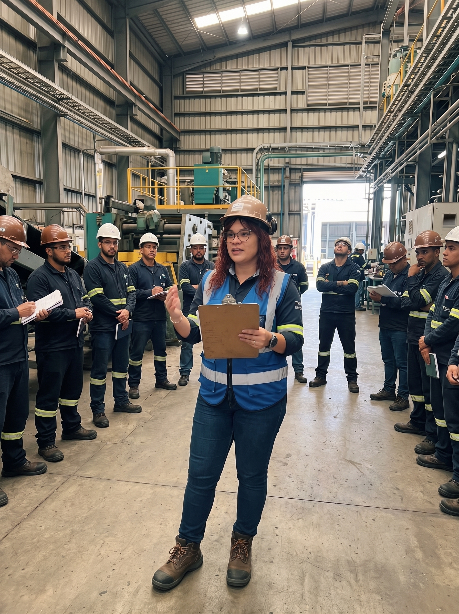
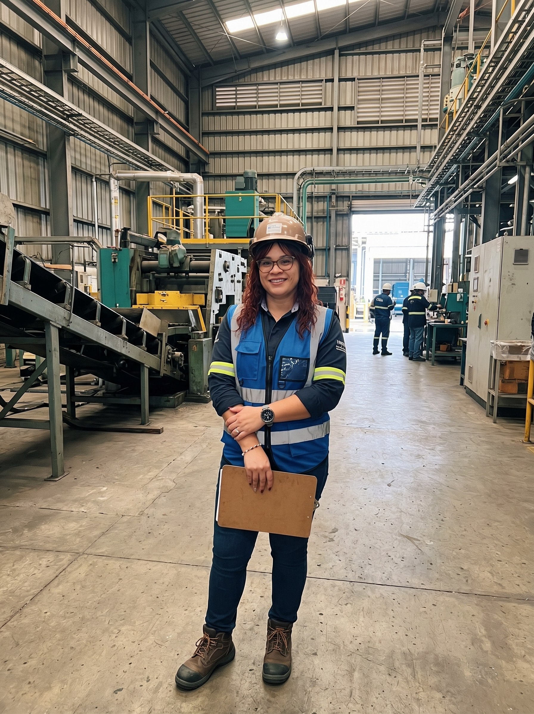

Gloria Maria Castrillon Parra
Liderazgo y Trayectoria
Profesional altamente experimentada en Seguridad y Salud en el Trabajo. Líder proactiva orientada a la reducción de índices de accidentalidad.
📞 3226167819 | ✉️ gloria.parral109@gmail.com
Formación Académica
- Universidad del Tolima: Profesional en SST (2021)
- SENA: Tecnología en Salud Ocupacional (2013)
- Diplomado: Sistemas de Gestión Integrados (120 hrs)
- Cursos: Coordinador de Alturas, Primer Respondiente (APH)
Competencias Clave
Trabajo en equipo
Adaptabilidad
Liderazgo
Resolución de conflictos
Portafolio de Servicios SG-SST
Esencial

Más Solicitado


Nuevo

Preguntas Frecuentes sobre SG-SST
¿Qué es el SG-SST y por qué es obligatorio?
El Sistema de Gestión de Seguridad y Salud en el Trabajo es obligatorio para todas las empresas en Colombia según el Decreto 1072 de 2015 para proteger la integridad de los trabajadores.
¿Cada cuánto se debe realizar la auditoría?
Por norma general, se debe realizar una auditoría anual planificada con participación del COPASST o Vigía de SST.
¿Cuáles son las consecuencias de no tener implementado el sistema?
El Ministerio de Trabajo puede imponer sanciones que van desde multas económicas severas (hasta 500 SMMLV) hasta el cierre temporal de la empresa. Si ocurre un accidente grave o mortal y se demuestra negligencia por falta del SG-SST, las responsabilidades escalan a niveles penales y civiles, incluyendo el cierre definitivo de operaciones.
¿Cada cuánto tiempo se debe actualizar el sistema?
La evaluación, revisión por la alta dirección y la actualización del SG-SST deben realizarse obligatoriamente de forma anual. A final de cada año, la empresa debe formular un nuevo Plan de Trabajo y un Plan de Capacitación para la vigencia siguiente.
¿Aplica el SG-SST para empresas con menos de 10 trabajadores?
Sí, aplica para todas las empresas sin importar su tamaño. Sin embargo, los Estándares Mínimos (Resolución 0312 de 2019) permiten que las microempresas (con 10 o menos trabajadores y clasificados en riesgo I, II o III) cumplan con un conjunto simplificado de 7 requisitos, haciendo el proceso más ágil sin perder de vista la prevención básica..